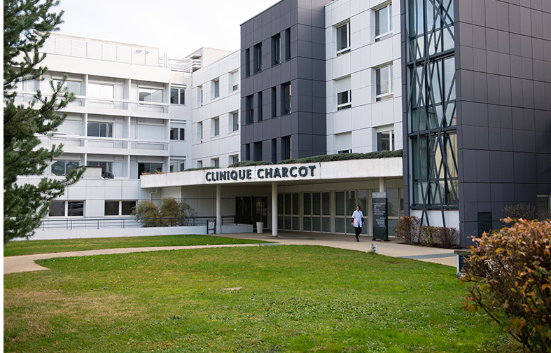
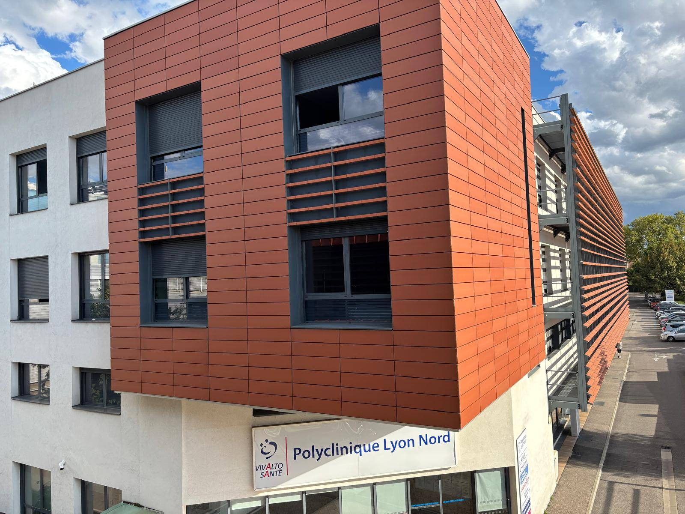
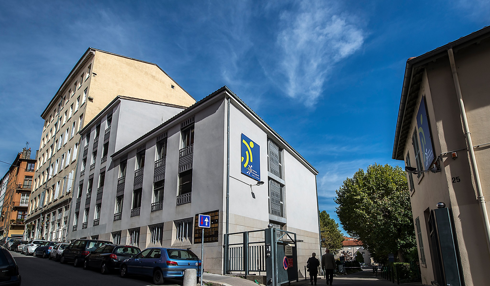

Chirurgie vasculaire
Chirurgie vasculaire
Dr Meryl FAVIER de LACHOMETTE
↗Chirurgien vasculaire
Consultation
Suivi patient
Prendre rendez-vous
Une équipe de chirurgiens vasculaires dédiée à la prise en charge, au suivi et à l’accompagnement des patients.
Chirurgie vasculaire
Chirurgien vasculaire
 Chirurgie vasculaire
Chirurgie vasculaire
 Chirurgie vasculaire
Chirurgie vasculaire
Notre équipe accompagne les patients sur les principales pathologies vasculaires, de la consultation au suivi post-intervention.
La chirurgie veineuse vise à traiter les affections des veines, principalement les varices, une pathologie fréquente touchant les membres inférieurs mais également les congestions pelviennes.
En savoir plusLa chirurgie artérielle traite les anévrismes et les sténoses artérielles. Grâce aux avancées endovasculaires, de nombreuses interventions peuvent être réalisées de manière mini-invasive.
En savoir plusLa chirurgie du dialysé s’adresse aux patients atteints d’insuffisance rénale terminale nécessitant un abord vasculaire essentiel à la réalisation des traitements de dialyse.
En savoir plusRetrouvez les établissements où notre équipe assure la prise en charge, le suivi et les interventions des patients.

Adresse
51 Rue Commandant Charcot 53,
69110 Sainte-Foy-lès-Lyon
Téléphone
04 72 32 69 21

Adresse
65 Rue des Contamines, 69140
Rillieux-la-Pape
Téléphone
04 72 01 45 16

Adresse
25 Rue de Flesselles, 69001
Lyon
Téléphone
04 72 32 69 21